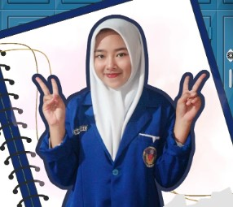
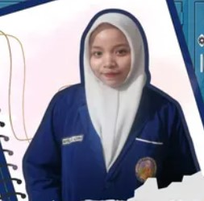
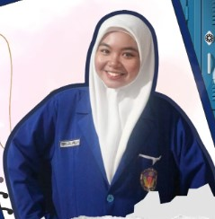
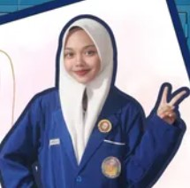
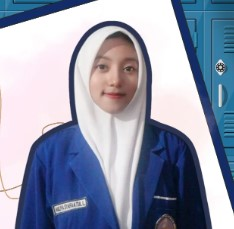
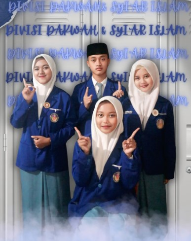
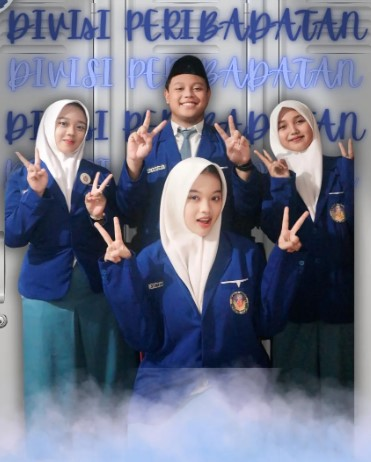
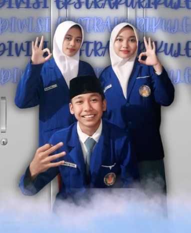
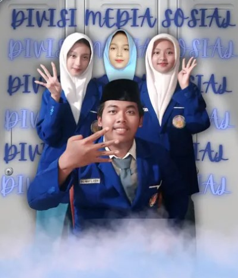

Selamat datang di Website resmi REMAJA MASJID SMANSAPA. Kami harap website ini menjadi sarana informasi, dokumentasi, dan komunikasi bagi seluruh warga Sman 1 Pacet.
Organisasi keagamaan sekolah yang menaungi Ekstrakurikuler Banjari, Qiro'ah, dan GemaJuza serta mendukung secara aktif di berbagai kegiatan keagamaan di lingkungan sekolah.
Remaja Masjid SMANSAPA (REMAS) merupakan
organisasi keagamaan di lingkungan sekolah
yang berperan sebagai wadah pengembangan
karakter, kreativitas, serta kegiatan
keislaman bagi siswa.
Remaja Masjid juga menjadi organisasi yang menaungi
beberapa ekstrakurikuler berbasis seni dan
dakwah Islam, yaitu Banjari, Qiro'ah,
dan GemaJuza.
Selain itu, Remaja Masjid aktif menjadi panitia
berbagai kegiatan keagamaan serta
berkolaborasi dengan OSIS dan organisasi
lainnya demi menciptakan kegiatan sekolah
yang lebih efektif dan bermanfaat.
Bersama menumbuhkan cinta kepada Nabi Muhammad SAW melalui akhlak dan keteladanan.
Ziarah Makam
Ziarah makam Sunan sebagai bentuk penghormatan terhadap sejarah penyebaran Islam di Nusantara.
Menelusuri jejak dakwah para wali dan mengambil teladan dari perjuangan mereka.
Pondok Ramadhan
Mengisi bulan Ramadhan dengan kegiatan yang bermanfaat untuk meningkatkan keimanan, ilmu, dan akhlak.
Belajar, beribadah, dan bertumbuh bersama dalam keberkahan Ramadhan.
Pengurus Inti
Pengurus Inti REMAJA MASJID SMANSAPA Periode 2025-2026
Ketua

Dian Nafidatus Cantika
Ketua

Marsella Phamendyta Azaria
Wakil Ketua
Sekretaris

Riris Eka Aprilia Putri
Sekretaris

Nathania Carissa Ramadhani
Wakil Sekretaris
Bendahara
Moch. Agus Suhardyanto
Bendahara

Auliya Syafaatul Laily
Wakil Bendahara
Divisi REMAJA MASJID
Divisi-divisi yang berperan dalam menjalankan program kerja dan kegiatan REMAJA MASJID SMANSAPA.

Divisi 1
Divisi dakwah & Syiar islam

Divisi 2
Divisi Peribadatan

Divisi 3
Divisi Ekstrakulikuler

Divisi 4
Divisi Media Sosial
Visi & Misi
Visi
Mewujudkan organisasi Remaja Masjid yang unggul, mampu menjalin hubungan yang baik antar anggota, menumbuhkan ke disiplinan dalam setiap kegiatan, menegakkan aturan secara tegas, serta memberikan solusi nyata dalam setiap permasalahan demi terciptanya organisasi yang solid, kompak, dan teratur.
Misi
Menjalin kerjasama dengan pihak sekolah dan organisasi lain melalui kegiatan keagamaan yang melibatkan seluruh anggota.
Membangun kedisiplinan dengan membiasakan tertib waktu, tanggung jawab, dan konsistensi dalam setiap program
Menegakkan aturan secara tegas dan adil dengan tata tertib yang jelas serta penerapan sanksi yang mendidik.
Menjalin kerja sama dengan OSIS dan organisasi sekolah lainnya.
Menciptakan organisasi yang unggul dengan meningkatkan kekompakan, solidaritas tinggi, serta peran aktif anggota di Remaja Masjid.